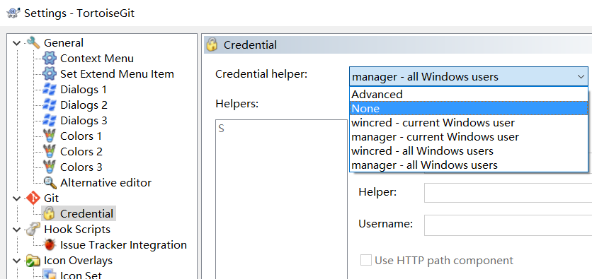

Windows存储Github的凭证。删除凭证。设置git让其不存储凭证。
参考了：
GitHub “remote: Permission to account/somefile.git denied to account”
现在回忆一下，我们在使用git往GitHub上push代码时，好像没怎么输过密码。
git的密码存储在哪里
在”凭据管理器”的”Windows凭据”里。
删除git的凭据
一种方式是进入凭据管理器然后删除github的凭据。
另一种是在”命令行提示”(command-line prompt(cmd.exe))里操作cmdkey删除凭据。1
2
3cmdkey /?
cmdkey /list
cmdkey /delete:"git:https://github.com"
设置TortoiseGit不存储凭据

将凭据助手中的选项设为”None”即可。
通过html的img标签控制图片的大小
MarkDown文件插入图片的语法为1
2

转换成网页后的代码如下所示（我们只需要添加width属性即可控制图片大小）：1
2
3<img src="/image/20171229_230703_凭证助手.png" alt="在TortoiseGit的设置的凭据助手选项卡">
<img src="/image/20171229_230703_凭证助手.png" alt="在TortoiseGit的设置的凭据助手选项卡" width="60%">
<img src="图片地址" alt="无法显示图像时浏览器将显示的替代文本" width="60%">
html的img标签的几个我能用到的属性：
src:必须属性。图片的URL。
alt:可以留空。用来描述图片的关键词。最初的本意是当图片因为某种原因不能被显示时而出现的替代文字，后来又被用于SEO(搜索引擎优化)，可以方便搜索引擎根据”Alt text”里面的关键词搜索到图片。
title:可选属性。鼠标悬置于图片上时出现的标题文字。
width:可选属性。设置图像的宽度。